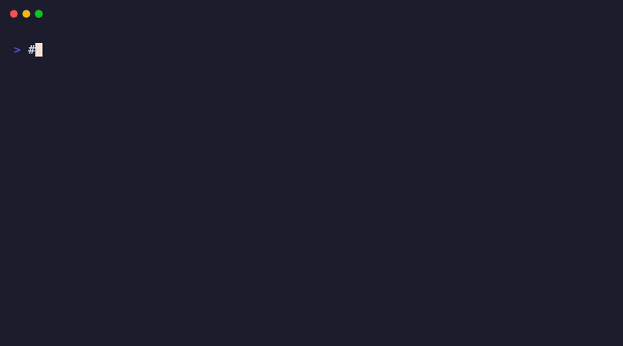

Automatically locks your laptop when your phone goes out of range, a USB device is unplugged, or the power cable is yanked.
Pair your phone. Walk away with it, and your laptop locks. Come back, disarm it. Simple.
Attach a USB key to yourself. If someone grabs your laptop, the USB disconnects and it locks.
If the power cable is suddenly pulled (laptop grabbed off a table), it locks immediately.
Download, open, type your phone name, click "Arm". That's it. No terminal, no coding.
Works on macOS, Windows, and Linux. Same simple interface everywhere.
Choose to lock, sleep, or shut down. Enable an alarm sound. Toggle each trigger independently.
Click the download button above. On Mac, unzip and open the app. On Windows, run the installer.
Right-click the shield icon in your system tray → Settings → BT Device → type your phone's name (e.g. "iPhone" or "Galaxy S24").
Click "Arm Guardian". The shield turns red. Your laptop is now protected.
Take your phone with you. When it's out of Bluetooth range (~10m), your laptop locks automatically.
